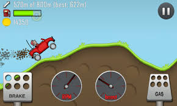

| HILL CLIMBING | |
Hillclimbing (also known as hill climbing, speed hillclimbing or speed hill climbing) is a branch of motorsport in which drivers compete against the clock to complete an uphill course. It is one of the oldest forms of motorsport, since the first known hillclimb at La Turbie near Nice, France took place as long ago as 31 January 1897. The hillclimb held at Shelsley Walsh, in Worcestershire, England is the world's oldest continuously staged motorsport event still staged on its original course, having been first run in 1905. . |
 |